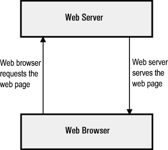

A Web browser can be considered as a utility which client uses to access web services and documents from the server. There are various types of browsers are in use, for example, the default browser for windows platform is internet explorer, similarly for apple device default browser is Safari. Although, there are other browsers also like Google Chrome, Mozilla Firefox, opera and UC.
Web Server is a piece of software running on a computer whose primary job is to distribute web pages to users whenever they demand it and provides an area in which to store and organise the pages of the website.
Key Differences Between Web Browser and Web Server
1. Web browser accesses information provided by Web servers through the help of protocols.
2. The web browser sends HTTP request and gets the HTTP response. In contrast, a Web server receives HTTP requests, and it generates responses.
3. The web server has three processing models – process based, thread based and Hybrid. As against, a web browser doesn’t have any processing models.
